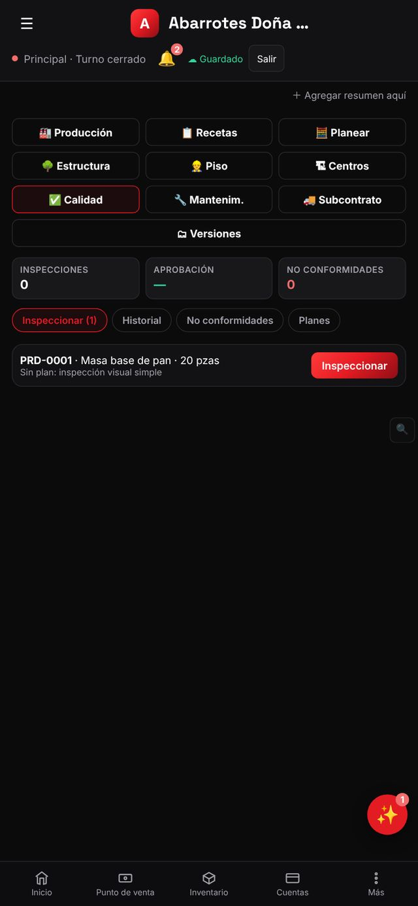

Control de calidad: inspecciones y no conformidades
Checklists al recibir compras o terminar producción.
💡 Módulo suelto «Manufactura y control de calidad» ($149/mes).
Lo rechazado va a merma o devolución.
Abre Calidad
En Manufactura abre ✅ Calidad. Arriba ves inspecciones, porcentaje de aprobación y no conformidades. (También existe la pantalla independiente Control de calidad para inspecciones al recibir compras.)

Inspecciona
En Inspeccionar aparecen las órdenes de producción por revisar (ej. PRD-0001 · Masa base de pan · 20 pzas). Si no hay plan de inspección, se hace una inspección visual simple.
Planes
En Planes crea un checklist por producto (peso, color, temperatura…) para que cada inspección siga los mismos puntos.
No conformidades
Lo que no cumpla se registra como No conformidad con su causa; lo rechazado va a merma o devolución al proveedor.
Historial
El Historial guarda cada inspección: quién, cuándo y resultado.
Consejos
- Un checklist de 5 puntos que sí se llena vale más que uno de 30 que nadie usa.
Sigue aprendiendo
Recetas y producción: de insumos a producto terminado
Define recetas, calcula costo y produce.
🛒 Compras y proveedoresÓrdenes de compra: pide, recibe y paga a tus proveedores
Crea órdenes, captura desde foto, recibe mercancía y controla lo pendiente.
Pruébalo con tu propio negocio
Empieza gratis, sin tarjeta. Si te atoras, escríbenos a impulsorhub@gmail.com.
Abrir Ventor Google Play